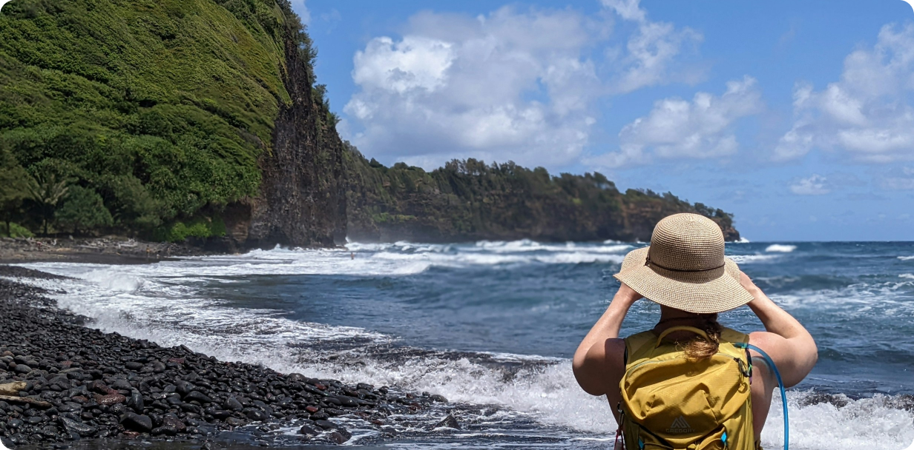

The Philippines is a breathtaking archipelago brimming with undiscovered wonders. Beyond the popular tourist
spots, the country is home to pristine islands, untouched beaches, and secluded natural treasures waiting to
be explored. From tranquil coastal villages to vibrant coral reefs, every corner offers a unique and
unforgettable experience for adventurers and travelers alike. Whether you're a nature lover, a
thrill-seeker, or someone looking to unwind, the Philippines has hidden gems that will captivate your
senses.
Journey through the country's less-explored islands, where you’ll find crystal-clear lagoons,
majestic
waterfalls, and lush tropical forests. Dive into vibrant marine sanctuaries teeming with life or take a
quiet stroll through charming local towns where the warmth of Filipino hospitality shines. These hidden
paradises offer a glimpse of the Philippines' raw beauty, away from the hustle and bustle, allowing you to
uncover a side of the country that few have seen. Embrace the journey and discover the secrets that make the
Philippines a must-visit destination.
“Not all those who wander are lost. Sometimes, it is through wandering that we find our way. Travel
teaches us to be adaptable, to seek beauty in the unexpected, and to find meaning in the journey
itself rather than just the destination.”
Traveling is an extraordinary journey that expands our horizons and deepens our understanding of the world.
When we step out of our familiar surroundings and venture into the unknown, we are greeted with new
cultures, landscapes, and perspectives. Each destination offers a unique experience, from the bustling
streets of a vibrant city to the serene beauty of a remote village. As we navigate through these diverse
environments, we not only collect memories but also gain insights that challenge our preconceived notions
and broaden our worldview. Traveling fosters a sense of curiosity and adventure, pushing us to explore
beyond our comfort zones and embrace the richness of human experience.
Ultimately, the value of travel extends beyond the destinations we visit; it lies in the personal growth and
transformation that occurs along the way. Each trip is an opportunity to challenge ourselves, learn new
things, and embrace the beauty of the unknown. As we explore new places and meet new people, we discover
more about ourselves and the world around us. Travel enriches our lives, leaving us with a deeper sense of
wonder, appreciation, and connection. It is through these experiences that we truly come alive and find joy
in the journey.